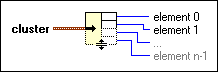

Unbundle Function
Owning Palette: Cluster, Class, & Variant VIs and Functions
Requires: Base Development System
Splits a cluster into each of its individual elements.
When you wire a cluster to this function, the function resizes automatically to display outputs for each element in the cluster you wired. The connector pane displays the default data types for this polymorphic function.

 Add to the block diagram Add to the block diagram |
 Find on the palette Find on the palette |